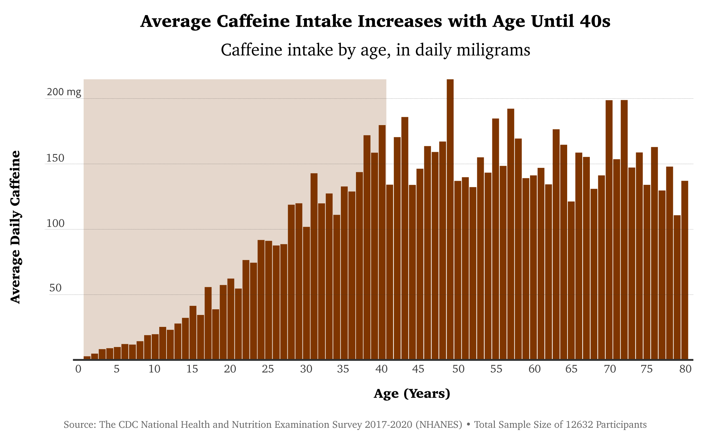

Coffee is one of the most common beverages on Earth, drank by millions for their daily dose of caffeine. When I first began my data exploration of coffee production and consumption trends globally and domestically, I was ready to make a light-hearted article perhaps about taste preferences or common brewing strategies. What I found instead was not so light-hearted.
According to the National Coffee Association, the "Coffee Belt" refers to the regions of the earth where coffee is most easily grown, and it lies between 25 degrees north of the equator and 30 degrees south of the equator. The nations which produce the vast majority of the world's coffee, including Brazil, Vietnam, and Indonesia, Colombia and Ethiopia, are developing nations that are located within this region. The United States also falls within this region to a lesser extent, due to territory such as Hawaii. Brazil alone produces almost three million tons of coffee beans annually as of 2021.

Coffee farmers in these countries face difficult economic conditions due to issues such as limited access to credit and low prices for their beans. This can make it difficult for farmers to earn a living wage and support their families. Climate change is expected to exacerbate this issue as well. According to the Inter American Development Bank, rising temperatures will reduce the area suitable for growing coffee by up to 50% by 2050. Now, lets take a look at who is able to enjoy these delicious coffee beans.
Not only do developing nations in the global south carry the costs of coffee production, but they are also not able to enjoy it. Nations outside the "Coffee Belt" in the global north, especially in northern Europe, drink disproportionately more coffee than those within the producing region. On a global scale coffee appears to reflect trends of inequality, but is this true as well within the US?
As we can see, the average daily consumption of caffeine within the U.S. follows a similar dynamic. Groups that are historically disadvantaged such as Black Americans and women, as well as those with statistically lower incomes such as those who have never married, consume less caffeine. What about if we looked at age?
As people grow more wealthy into their prime earning years of their 40s, we find that average daily caffeine consumption increases and then stabilizes. Coffee is not just a luxury for some, and many (such as myself) who have drank it for a long time find the drink to be more necessary than optional. Perhaps this addictive feature of coffee is why the drink consumption tends to maintain a high level once people age. For those such as myself who drink coffee daily, it is important that we look for ways to consume coffee more responsibly. Always look for coffee that is being produced ethically, in a way that supports local communities in the global south as well as disadvantaged communities at home.
The data on coffee production globally was taken from Our World in Data which conducted “major processing” on reports from the Food and Agriculture Organization of the United Nations in 2023 to produce the data.
The data on coffee consumption globally was taken from the World Population Review which aggregated data from sources including the International Coffee Organization, the BBC, and the World Atlas.
The data on daily American Caffeine consumption was taken from the CDC National Health and Nutrition Examination Survey from 2017-2020 with 12,632 participants. This survey is also known as NHANES.